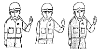
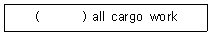
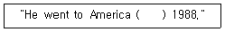
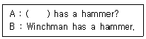
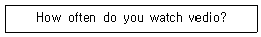
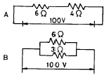
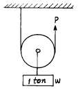
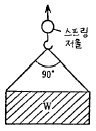

양화장치운전기능사 (2003-07-20 기출문제)
1과목: 임의구분
1. 데릭식 양화장치는 화물의 종류, 포장 및 중량등에 따라 의장법을 달리한다. 다음 중 데릭식 양화장치의 종류가 아닌 것은?
- 유니언 퍼어쳐스(Union Purchase)식
- 슬루잉 붐(Slewing boom)식
- 헤비 데릭(heavy derrick)식
- 지브 크레인(Jib crane)식
(정답률: 73%)

2. 유니언 퍼어쳐스(Union Purchase)식과 스윙잉 붐(Swining boom) 의장 방식을 비교할때 스윙잉 붐 의장방식의 장점에 해당되는 것은?
- 의장방법이 비교적 간단하다.
- 하역능률이 양호하다.
- 비교적 중량물, 대형화물, 고가품, 위험물의 하역에 적합하다.
- 카고폴이 해치코밍, 불워크 등에 비해 수명이 짧다.
(정답률: 90%)
3. 2본의 데릭붐으로 한개의 화물을 달고 2대의 윈치 조작에 의해 작업을 하는 방식은?
- 분동감기식 데릭
- 선회식 데릭
- 하이렌식 데릭
- 유니언 퍼쳐스식 데릭
(정답률: 93%)
4. 싱글데릭 하역방식 중 벨레이식 하역방식(velle type derrick)이 종래의 데릭방식에 비해 장점으로 볼 수 없는 것은?
- 삭 취급이 간단하여 로프 꼬임이 적다.
- 큰 하역범위를 가지며, 화물을 희망위치에 적치할 수 있다.
- 프리벤터 가이가 필요없다.
- 선회시 관성이 커져 이송속도가 빠르다.
(정답률: 80%)
5. 토핑 리프트와 붐 가이의 역할은?
- 붐을 소정의 위치에 고정시킨다.
- 화물을 달아 올린다.
- 화물을 싸매거나 얽어맨다.
- 원통형의 철재나 목재로 되어있다.
(정답률: 100%)
6. 다음 중 양화장치의 제한하중에 포함되지 않는 것은?
- 데릭 붐(derrick boom)의 중량
- 스링(sling)의 중량
- 버켓(bucket)의 중량
- 카고 훅(cargo hook)의 중량
(정답률: 95%)
7. 트윈 크레인에서 중량물 하역 작업시 크레인 운전에 대한 설명 중 옳은 것은?
- 중량물 작업시 슬레이브 크레인에서만 조종한다.
- 중량물 작업시 마스터 크레인에서만 조종한다.
- 중량물 작업시 2개의 크레인에서 같이 조종한다.
- 중량물 작업시 데크에서 무선으로 조종한다.
(정답률: 95%)
8. Container(컨테이너)를 작업하는 Spreader(스프레더)에서 Telescopic(테레스코픽)이란 무엇인가?
- Spreader(스프레더)를 신축하는 것
- Spreader(스프레더)의 길이를 축소하는 것
- Spreader(스프레더)의 길이를 확대하는 것
- Spreader(스프레더)를 Chassis(새시)와 연결하는 것
(정답률: 84%)
9. 컨테이너 작업용 하역장비 Spreader(스프레더)의 Tilting device(틸팅 디바이스)에 해당하는 것은?
- Rope tension(로프 텐션)
- Trim, skew, list.(트림, 스큐, 리스트)
- Rail clamp(레일 크램프)
- Trolley girder(트롤리 거더)
(정답률: 87%)
10. 양화장치 시운전시에 점검할 사항이 아닌 것은?
- 각종 안전장치의 작동상태
- 양화장구의 손상정도
- 제동장치의 제동상태
- 이상음 및 이상발열
(정답률: 100%)
11. 양화장치의 시운전을 하기전에 점검해야 할 것은?
- 주유상태
- 이상음의 유무
- 원동기 성능
- 안전장치의 작동상태
(정답률: 90%)
12. 데릭형 양화장치를 취급할때 주의사항 중 잘못 설명한 것은?
- 데릭 아래에는 작업원을 배치하여서는 아니된다.
- 각종 양화장구는 양화장치 의장을 완료한 후에 점검을 한다.
- 데릭의 앙각을 적게할수록 토핑리프트 와이어에 장력이 많이 걸린다.
- 의장작업 변경시에는 작업원을 안전한 장소로 대피시켜야 한다.
(정답률: 89%)
13. 집크레인 신호시 그림과 같이 하여 손목을 좌, 우로 가볍게 흔든다. 무엇을 나타내는 신호인가?

- 카고와이어 올리기
- 카고와이어 내리기
- 지브 일으키기
- 지브 눕히기
(정답률: 85%)
14. 지브 크레인의 작업을 중지하고 취해야 하는 조치 중 틀린 것은?
- 지브를 선체의 중심선에 둔다.
- 조작레버는 스토퍼를 건다.
- 운전대에 있는 제어용 메인 스위치 및 모터용 스위치를 끈다.
- 작업이 끝났을 때는 선박측에 연락할 필요는 없다.
(정답률: 95%)
15. 다음 중 양화장치의 전기윈치를 가장 잘 설명한 것은?
- 무리한 하중에도 내구성이 좋다.
- 유조선, 케미칼선 등 특수선박에 많이 사용된다.
- 소음 및 진동은 적으나 원격조작이 불가능하다.
- 윈치용 직류 전동기로 직권 또는 복권 전동기가 사용된다.
(정답률: 75%)
16. 다음은 데릭 붐(derrick boom)의 상하이동에 대한 설명이다. 맞는 것은?
- 붐의 헤드를 현외로 많이 나가게 할 경우에는 붐을 눕혀서 앙각을 크게 한다.
- 붐을 많이 눕혀 놓으면 토핑 리프트에 큰 힘이 작용한다.
- 붐의 앙각은 통상 15∼25° 정도로 하여 사용한다.
- 붐의 상하이동은 카고 와이어를 당기거나 늘려서 한다.
(정답률: 69%)
17. 스링작업 동작의 감아 올리기 신호 중에서 일단정지 신호를 할 때 확인하는 사항이 아닌 것은?
- 불안전한 때에는 다시 걸게 할 필요는 없다.
- 화물의 중심에 정확하게 달렸는가를 확인한다.
- 화물이 흐트러질 우려가 없는가를 확인한다.
- 훅의 중심에 스링이 걸려있는가를 확인한다.
(정답률: 100%)
18. 컨테이너를 작업하는 주행 크레인, 쉽 테이너, 하버 크레인, 트랜스 테이너 등에 설치된 Spreader(스프레더)의 Twist lock(트위스트 락)은 Spreader가 컨테이너에 착상하면 어떻게 동작하는가?
- 4개의 트위스트 락의 착상 램프 중 1개만 ON되면 Twist lock(트위스트 락)은 작동한다.
- 4개의 트위스트 락의 착상 램프 중 2개만 ON되면 Twist lock(트위스트 락)은 작동한다.
- 4개의 트위스트 락의 착상 램프 중 3개만 ON되면 Twist lock(트위스트 락)은 작동한다.
- 4개의 트위스트 락의 착상 램프 중 4개 모두 ON되어야만 Twist lock(트위스트 락)은 작동한다.
(정답률: 92%)
19. 컨테이너 크레인의 Trolley rail(트롤리 레일)에 기름 방울이 떨어졌다. 어떠한 현상이 발생하는가?
- 트롤리 레일에 기름이 묻으면 바퀴가 공회전을 하기 때문에 세척유로 잘 닦아내야 한다.
- 트롤리 레일에 기름이 묻으면 리미트 스위치가 공 회전을 한다.
- 트롤리 레일에 기름이 묻으면 트롤리가 움직일 때 소리가 조용하고 부드러운 운전이 된다.
- 트롤리 레일의 유막 현상으로 바퀴가 공 회전을 하고 요란한 소리가 난다.
(정답률: 65%)
20. 다음은 선박의 양화장치 신호법에 대한 설명이다. 옳은 것은?
- 화물의 이동속도를 빨리해야 할때에도 손의 흔들림이 빨라져서는 안된다.
- 지브를 올릴때는 오른쪽 손바닥을 흔든다.
- 지브 크레인 신호의 기본 자세중 팔꿈치의 각도는 45° 로 한다.
- 신호는 반드시 선측작업자 1인과 선내작업자 1인이 해야 한다.
(정답률: 91%)
2과목: 임의구분
21. 유조선에서 스팀윈치를 사용하는 이유는?
- 원격조종이 용이하다.
- 시동준비가 간단하다.
- 스파크에 의한 화재를 방지한다.
- 누유의 우려가 없다.
(정답률: 100%)
22. "하역작업을 완료하다" 라는 의미로 영문을 표기할 때 ( ) 안에 적합한 것은?

- Stopped
- K.O
- Commenced
- Completed
(정답률: 76%)
23. "무엇이 문제인것 같습니까 ?"의 표현에 적합한 것은?
- What seems to be the problem?
- What is the name of it?
- What happened to you?
- Which is the best your thought?
(정답률: 97%)
24. "No entrance except on business"의 문구가 의미하는 것으로 옳은 것은?
- 판매를 위한 출입은 금지된다.
- 면회를 하고자 하는 경우 출입은 제한된다.
- 허가를 받으면 출입이 가능하다.
- 용무외는 출입이 금지된다.
(정답률: 100%)
25. 다음 ( )안에 알맞는 것은?

- in
- at
- on
- for
(정답률: 83%)
26. ( )안에 들어갈 적당한 의문사는 어느 것인가?

- How
- Who
- What
- Where
(정답률: 53%)
27. "제한구역" 또는 "통제구역"의 뜻으로 쓰이는 영어 문구는 어느 것인가?
- AREA PERMIT
- OUT PLACE
- DISTRICT EXEMPT
- OFF LIMIT
(정답률: 87%)
28. 컨테이너의 적화와 관련된 약자를 풀어쓴 것이다. 틀린 것은?
- CY-Container Yard
- RORO-Roll Off Roll Off
- LCL-Less than Container Load cargo
- D/R-Dock Receipt
(정답률: 100%)
29. 다음에서 감정인을 뜻하는 것은?
- checker
- tallyman
- surveyor
- foreman
(정답률: 75%)
30. 중량1톤을 운임건으로 하는 중량화물은 각 국의 도량형에 따라 다르다. 그 중 유럽 여러나라와 우리나라에서 사용하는 중량단위는?
- Long ton
- Short ton
- Metric ton
- Net ton
(정답률: 90%)
31. 다음 물음에 대한 올바른 답변은?

- Almost every day
- It is three o'clock
- At night
- A little passed 8:00
(정답률: 73%)
32. 힘의 방향을 바꾸거나, 힘의 배력을 얻기 위하여 사용하는 것은?
- 블록(block)
- 섀클(shackle)
- 딤블(thimble)
- 셀(shell)
(정답률: 90%)
33. 리프팅 마그네트(Lifting Magnet)에 대한 설명 중 옳지 않은 것은?
- 일반용으로는 원형, 가느다란 강재의 취급시에는 각형을 사용한다.
- 흡인능력은 현수재료의 자력선 관통면적에 비례한다.
- 현수하중은 마그네트 자중의 5 ~ 6배 이다.
- 정전시에는 안전상 화물이 바로 낙하 하도록 되어 있다.
(정답률: 100%)
34. 와이어로프의 종류 및 특징에 관한 설명 중 잘못된 것은?
- 같은 굵기의 와이어로프일 경우 소선이 가늘고 많으면 유연성이 없어지므로 취급하기 힘들다.
- 스트랜드의 꼬임과 로프를 꼬는 방향이 반대인 꼬임을 보통 꼬임이라 한다.
- 랭식 꼬임은 마모에 대한 내구성은 좋으나 킹크가 발생하기 쉽다.
- 필러형 와이어로프는 내부마모가 적고 굴곡피로에 대해 우수하다.
(정답률: 73%)
35. 섬유로프에 대한 설명 중에서 합성섬유 로프에 대한 특징을 설명한 것은?
- 일광, 비, 해수에 내구성이 있다.
- 항장력, 내습성이 우수하다.
- 사용 중 기름이 침투하면 강도가 저하 한다.
- 가볍고 충격에 강하며 부식이 적다.
(정답률: 72%)
36. 2개의 블럭 중 위의 것을 싱글 휩, 아래것을 런너로 하여 조립한 것으로 배력이 2인 태클은?
- 건 태클
- 러프 태클
- 더블 휩
- 투우 포울드 퍼쳐스
(정답률: 75%)
37. 섀클에 대한 설명 중 옳지 않은 것은?
- 훅이 없는 블록을 걸 때 사용한다.
- 섀클의 크기는 섀클의 몸체 또는 핀의 직경으로 표시한다.
- 강도는 훅에 비해 2 ~ 3배 강하다.
- 체인의 말단에 쇠붙이를 연결하는데 사용된다.
(정답률: 83%)
38. 다음 와이어로프 기호 중 일반적으로 항만하역 작업에 가장 많이 사용되는 와이어로프를 나타낸 것은?
- 6 × 37(Fi) + FC + UG
- 6 × 19(W) + FC + G
- 6 × 24(W) + IWRC + UG
- 6 × 24 + FC + G
(정답률: 69%)
39. 활차(block)에 rope를 통한 장치를 총칭하여 무엇이라 하는가?
- Tackle(purchase)
- Common block
- Shackle
- Swivel
(정답률: 96%)
40. 다음 체인 블럭(chain block)의 설명 중 틀린 것은?
- 마찰저항이 적다.
- Weston Purchase 원리를 이용한다.
- 고정블럭과 이동블럭이 있다.
- 무한체인을 사용한다.
(정답률: 71%)
3과목: 임의구분
41. 양화장치 부속 용구들의 점검기준을 설명하였다. 잘못된 것은?
- 훅, 섀클 등은 균열이 있으면 사용해서는 안된다.
- 나사식 섀클의 섀클핀에 나사산이 마모된 것은 폐기한다.
- 훅은 구부러진 각도가 3도 이상일 때는 사용 금지 한다.
- 중량물용 훅은 장기간 사용하면 연화되므로 경화시켜 주어야 한다.
(정답률: 85%)
42. 저항이 50옴인 전선에 2암페어의 전류를 흘리기 위한 전압은 몇 볼트인가?
- 25 볼트
- 50 볼트
- 100 볼트
- 200 볼트
(정답률: 96%)
43. 그림과 같은 A, B 개의 저항회로 양단에 각각 100V의 전압을 가했을 경우 B에 흐르는 전류로서 옳은 것은?

- A의 4배
- A의 4.5배
- A의 5배
- A의 5.5배
(정답률: 72%)
44. 직류전동기의 부속품이 아닌 것은 어느 것인가?
- 브러쉬상자
- 슬립링
- 정류자
- 계자코일
(정답률: 71%)
45. 내연기관에 있어 실린더 내에서 압축하는 이유 중 틀린 것은?
- 열효율을 높이기 위해서
- 저질연료의 사용을 가능하게 하기 위하여
- 관성력을 좋게 하기 위하여
- 발화 늦음을 방지하기 위해서
(정답률: 87%)
46. 디젤기관의 특징을 설명한 내용 중 틀린 것은?
- 공기만을 흡입하여 압축후 연료를 분사시켜 자연착화가 되어 동력을 발생한다.
- 혼합가스를 압축하여 전기점화를 한다.
- 저속에서도 동력이 크며 연료소비가 적다.
- 마력당 중량이 크고 소음, 진동의 결점이 있다.
(정답률: 95%)
47. 다음은 전기 절연에 관한 설명이다. 틀린 것은?
- 물질에 따라 전기저항은 다르다.
- 도체를 절연물로서 절연한 경우, 영구히 절연성이 지속되는 것은 적다.
- 단락(쇼트)되면, 일시에 큰 전류가 회로에 흘러 도체를 급격히 가열 시킨다.
- 저항이 적거나 전기를 잘 전하는 것을 도체(導體)라 하며, 운모(雲母), 유리, 공기 등이 여기에 속한다.
(정답률: 95%)
48. 다음중 4행정 기관에 대한 설명 중 맞는 것은?
- 실린더수가 4개인 기관이다.
- 밸브수가 4개인 기관이다.
- 커넥팅로드가 4개인 기관이다.
- 크랭크축 2회전에 1회의 동력을 얻는 기관이다.
(정답률: 95%)
49. 유압구동 윈치에 대한 것 중 유압펌프의 종류가 아닌 것은?
- 플런저펌프
- 기어펌프
- 베인펌프
- 회전펌프
(정답률: 56%)
50. 유압윈치에서 파이프내에 공기가 들어가면 어떤 현상이 일어 나는가?
- 회전이 원활 하지 못하여 쇼크가 일어 난다.
- 기름의 점도가 올라간다.
- 기름이 역류한다.
- 흐르는 기름의 양이 증가한다.
(정답률: 87%)
51. 그림과 같은 태클장치로 중량(W) 1ton의 화물을 올리는데 얼마의 힘이면 되겠는가? (단, 활차의 중량 및 마찰계수는 없는 것으로 한다.)

- 2 ton
- 1.5 ton
- 0.5 ton
- 0.1 ton
(정답률: 82%)
52. 그림의 스프링 저울에 10톤을 표시하고 있다. 이때 화물의 중량(W)과 1줄에 걸리는 장력(F)은 각각 얼마인가?

- 14.1(톤), 5.8(톤)
- 14.1(톤), 7.07(톤)
- 10(톤), 7.07(톤)
- 10(톤), 14.1(톤)
(정답률: 77%)
53. 양화장치 작업 중 화물을 갑자기 감아올리거나 감아 내릴때 작용하는 운동법칙은?
- 작용과 반작용의 법칙
- 관성의 법칙
- 가속도의 법칙
- 굽힘모멘트
(정답률: 84%)
54. 짝힘(우력)의 성질에 관한 설명 중 틀린 것은?
- 힘의 크기는 같고 방향은 반대이다.
- 짝힘의 합은 1이므로 물체를 이동시키려는 경향은 없고 회전시키려는 경향만 있다.
- 짝힘은 이보다 더욱 간단한 힘으로 줄일 수 없다.
- 짝힘은 자유벡터이다.
(정답률: 60%)
55. 사고의 직접원인으로 가장 합당한 것은?
- 사회적 환경
- 유전적 요소
- 성격결함
- 불안전 행동 또는 상태
(정답률: 100%)
56. 소화기의 종류 중 내용 물질과 관계가 없는 것은?
- 중촌식
- 포말식
- 액체식
- 가스식
(정답률: 91%)
57. 하역의 세가지 요점이 될 수 없는 것은?
- 신속한 하역
- 안전한 하역
- 최대량 적재
- 장기간 정박
(정답률: 95%)
58. 다음은 하역 작업 중 지게차에 대한 설명이다. 옳지 않은 것은?
- 후진시 사람이나 장애물이 있는가를 확인하며, 경보를 울리면서 진행하여야 한다.
- 내리막길 운전시 저속으로 브레이크를 밟으면서 서서히 운행하여야 한다.
- 큰 짐 적재시 전방이 안보일 때 후진운행을 한다.
- 경사면에서 운전시 짐은 반드시 언덕 아래로 향하여야 한다.
(정답률: 100%)
59. 다음에서 데릭형 양화장치의 점검사항이 아닌 것은?
- 구우즈넥의 주유가 되어 있는가
- 토핑 리프트 와이어의 손상은 없는가
- 트롤리에 와이어가 잘 감겨져 있는가
- 붐의 변형, 균열, 심한 부식은 없는가
(정답률: 69%)
60. 주정과 같이 부피가 크거나 화물의 길이가 보통 30 피트 이상인 화물을 무엇이라 하는가?
- 조악 화물
- 벌키 화물
- 벌크 화물
- 취약 화물
(정답률: 82%)